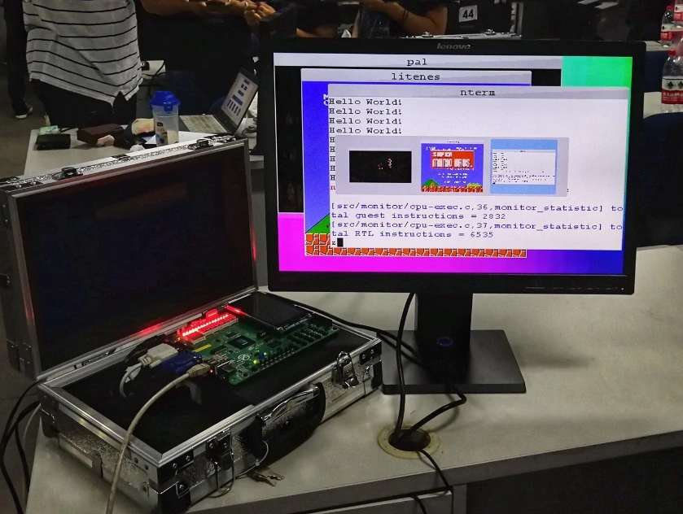

AbstractMachine 是裸机上的 C 语言运行环境，提供 5 组 (15 个) 主要 API，可以实现各类系统软件 (如操作系统)：
putch/halt - 最基础的计算、显示和停机ioe_read/ioe_write - I/O 设备管理ienabled/iset/yield/kcontext - 中断和异常protect/unprotect/map/ucontext - 虚存管理cpu_count/cpu_current/atomic_xchg - 多处理器从硬件的视角，“操作系统” 就是一段指令序列；而从数学的视角，任何程序都是状态机——因此，我们没有道理不能轻松愉快地用高级语言 (例如 C 语言) 实现操作系统内核。当然，我们也知道操作系统内核需要管理中断、系统调用、虚拟存储、I/O、多处理器等计算机硬件为我们提供的功能，这些功能似乎并不是 C 语言所 “内置” 的：C 语言只支持纯粹的计算，非计算的部分都通过库函数实现，例如 fwrite、setjmp 等。AbstractMachine 通过 15 个 C API 实现了硬件抽象层 (hardware abstraction layer, HAL)，使我们可以在 C 代码中操纵计算机硬件。
在操作系统实验的 os-workbench 中已经包含了 AbstractMachine 代码，并且实验框架代码已经完成了配置。如果你使用 Debian/Ubuntu 系统，你在编译代码时可能会遇到一些命令执行失败的情况，通常需要以下软件包 (如果有其他依赖，你可能会遇到编译错误，请相应解决)：
gcc-multilib (交叉编译用)libsdl2-dev (图形库)qemu-system (全系统模拟器)如果你希望建立自己的 AbstractMachine 项目或编译运行其他示例代码 (microbench, fceux, litenes, ...) 等，则需要先配置好 AM_HOME 环境变量，把它设置为 AbstractMachine 目录的绝对路径：
export AM_HOME=/abs/path/to/.../os-workbench/abstract-machine
你可以把这一行写在你 shell 的默认配置中 (例如 .bashrc)，使得不必每次打开终端都重新配置。如果你第一次使用 Linux，这会是一个比较痛苦的过程——你还需要学习 Shell 有关的基础知识。一份不错的入门材料是 MIT 的 “The Missing Semester of Your CS Education”。
完成必要软件的安装和正确的 AM_HOME 配置后，我们就可以在 AbstractMachine 上编程了。在文件系统的任意目录中创建一个 .c 文件和 Makefile (参考 man 3 stdarg)。例如，创建 hello.c:
#include 在同一个目录下，我们创建一个 Makefile:
NAME := hello
SRCS := hello.c
include $(AM_HOME)/Makefile.app
我们就完成了一个可移植到多个 “bare-metal” 平台的 Hello World 程序，它们可以直接在模拟器里运行，甚至直接在开发板上运行！当然了，现在编译、链接、运行都会交给 AbstractMachine 中的代码帮忙搞定。
为了编译运行，AbstractMachine 需要知道目标的平台/体系结构，通过 ARCH 环境变量指定。例如，我们希望编译出能在 x86-64 (QEMU) 下运行的镜像：
$ make ARCH=x86_64-qemu
# Building hello-image [x86_64-qemu]
+ CC hello.c
...
+ CREATE -> build/hello-x86_64-qemu
会自动完成编译，得到 build/ 目录下的若干文件：
build
├── hello-x86_64-qemu // 可运行、包含 bootloader 等的磁盘镜像
├── hello-x86_64-qemu.o // hello 项目的二进制文件
└── x86_64-qemu
├── hello.d // hello.c 依赖的头文件 (gcc -MMD 生成)
└── hello.o // 编译 hello.c 得到的目标文件
不妨用 objdump -d 命令查看 hello-x86_64-qemu.o 反汇编后的代码，是直接运行在裸机上的 C 程序代码，程序的入口是 _start。Makefile 也自带了运行功能，传入 mainargs 环境变量，即可将参数传递给 main 函数：
$ make run ARCH=x86_64-qemu mainargs="Hello World"
...
"Hello World" from x86_64 program!
CPU #0 Halt (00).
你可以尝试其他的 ARCH 环境变量：x86-qemu, native，在不同平台下运行。你也可以 export 默认的 ARCH=x86_64-qemu (甚至写到 Makefile 中)，避免每次键入。
我们的 Hello World 程序引用了一些奇怪的宏，例如 __ISA__；我们可以在程序中使用它。这个宏不是 C 标准里定义的，那么是谁定义的？当我们设置不同的 ARCH，打印的 __ISA__ 也各不相同。这一定是 Makefile 做的。怎么知道呢？我们可以对 AbstractMachine 代码做一个全文查找 “__ISA__”——我们能定位到 Makefile 中的一行代码，将 __ISA__ 的定义使用 gcc 的 -D 选项加入了 CFLAGS。
没错，计算机系统没有魔法，“神奇” 的事情只是因为你对有些语言机制/用法并不熟悉。
